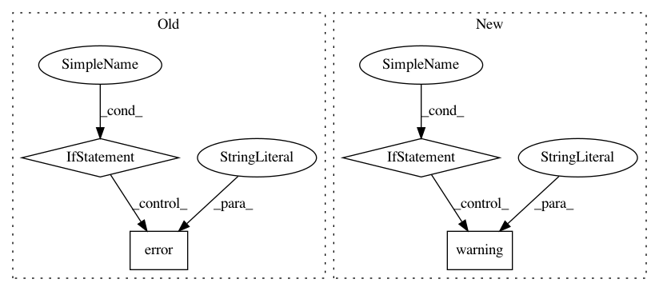

3bd37d6a657ff676c919515784cdb631c138e754,homeassistant/components/evohome/__init__.py,,setup,#Any#Any#,55
Before Change
)
except HTTPError as err:
if err.response.status_code == HTTP_BAD_REQUEST:
_LOGGER.error(
"setup(): Failed to connect with the vendor"s web servers. "
"Check your username (%s), and password are correct."
"Unable to continue. Resolve any errors and restart HA.",
evo_data["params"][CONF_USERNAME]
)
elif err.response.status_code == HTTP_SERVICE_UNAVAILABLE:
_LOGGER.error(
"setup(): Failed to connect with the vendor"s web servers. "
"The server is not contactable. Unable to continue. "
"Resolve any errors and restart HA."
)
elif err.response.status_code == HTTP_TOO_MANY_REQUESTS:
_LOGGER.error(
"setup(): Failed to connect with the vendor"s web servers. "
"You have exceeded the api rate limit. Unable to continue. "
"Wait a while (say 10 minutes) and restart HA."
)
else:
raise // We don"t expect/handle any other HTTPErrors
return False
finally: // Redact username, password as no longer needed
evo_data["params"][CONF_USERNAME] = "REDACTED"
After Change
load_platform(hass, "climate", DOMAIN, {}, hass_config)
if "dhw" in evo_data["config"][GWS][0][TCS][0]:
_LOGGER.warning(
"setup(): DHW found, but this component doesn"t support DHW."
)
@callback
def _first_update(event):
When HA has started, the hub knows to retrieve it"s first update.
pkt = {"sender": "setup()", "signal": "refresh", "to": EVO_PARENT}
In pattern: SUPERPATTERN
Frequency: 3
Non-data size: 4
Instances
Project Name: home-assistant/home-assistant
Commit Name: 3bd37d6a657ff676c919515784cdb631c138e754
Time: 2019-04-02
Author: david@bonnes.me
File Name: homeassistant/components/evohome/__init__.py
Class Name:
Method Name: setup
Project Name: HazyResearch/pdftotree
Commit Name: 6c4518dca232ea4942ad5130f0f1a57e3a78ab73
Time: 2020-10-02
Author: hiromu.hota@hal.hitachi.com
File Name: pdftotree/core.py
Class Name:
Method Name: parse
Project Name: home-assistant/home-assistant
Commit Name: 92dc76773af08f84806611444210c6ea91dc5030
Time: 2017-07-10
Author: mike@codeaweso.me
File Name: homeassistant/components/notify/twitter.py
Class Name: TwitterNotificationService
Method Name: send_message